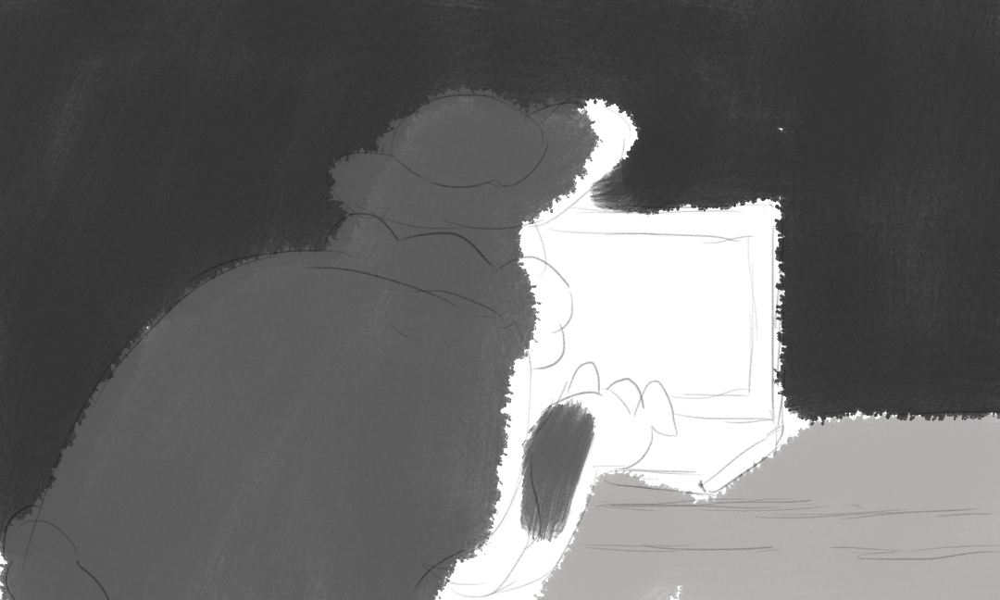
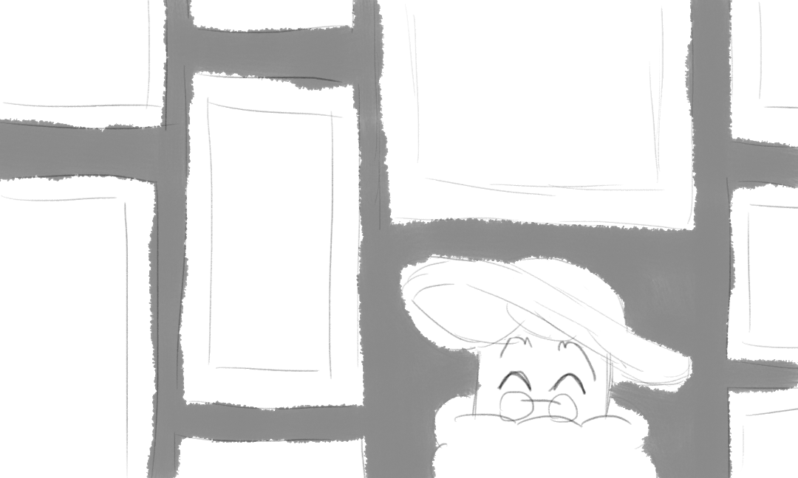
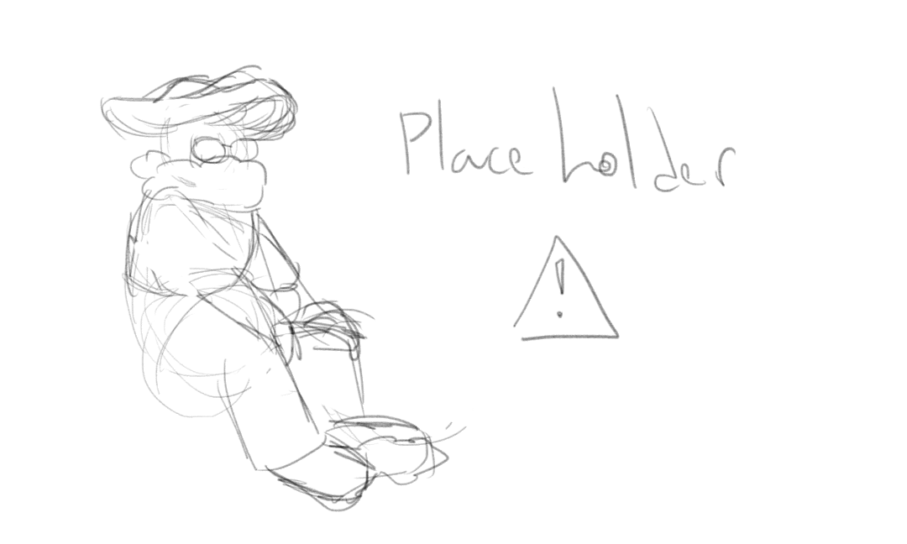
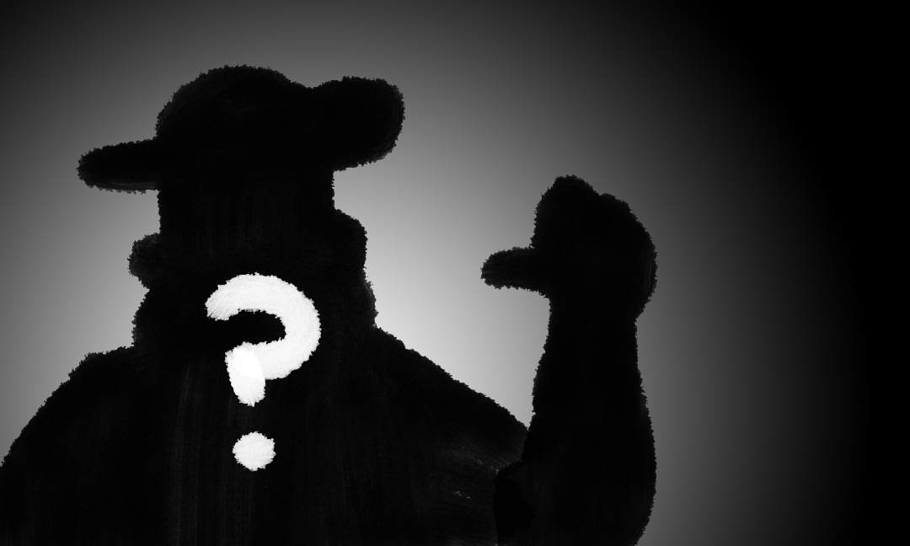
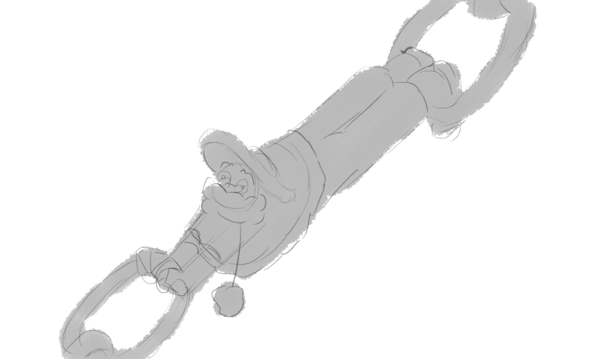

Welcome to the Mush-Room!
The name's Amapola Mystery, and this is my self-made online home. I like to think it's an apartment located inside a mushroom :}
Given that the current social media landscape looks bleak, and that I love creating, I started toying around with this. It's a work in progress (and very likely will remain so indefinitely).
Feel free to have a look around!
Blog
Because I have too many things to say, All the time. Updated on a weekly basis!
Gallery
Because not only I love to create, I also love to show off.
Shrines
Because I am so normal about my interests... No, no I'm not. Who the hell do you take me for?
About
Because who is the person writing, anyways? And who's this character all around the page? The masses need to know! It's also where my socials are, if you were looking for 'em.
Useful Links
A collection of links to sites I find useful.
Upcoming Updates
- Make a 404 page
- Make site art
- Start working on Shrines? maybe?